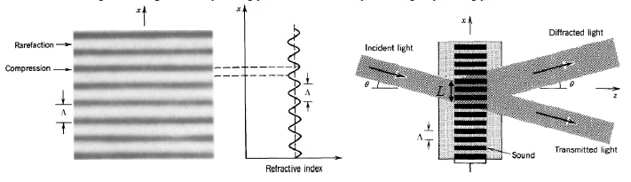

Y17 (2017) — English translation
The refractive index of a medium can vary due to mechanical deformations. In particular, a standing acoustic wave creates a spatial periodic pattern that can be used to diffraction light. The simplest case of diffraction is Bragg diffraction. In this mode, light is incident at an angle, partially reflected from a structure with a periodically changing refractive index. Consider a standing sound wave with wavelength $\Lambda$, which creates periodic inhomogeneities in the refractive index along the axis $x$ with the same wavelength. Monochromatic light with wavelength $\lambda$ in a given medium falls at an angle $\theta$ (see figure), partially reflected from neighboring layers with the same standing wave phase. In this case, interference of light waves reflected from different layers occurs so that the light waves reflected at a certain angle have a phase difference that is a multiple of $2\pi$. These waves add up and create a diffraction peak. In other directions, the waves have different phases and, when summed, create a zero resulting field.

Source: https://pho.rs/p/3037